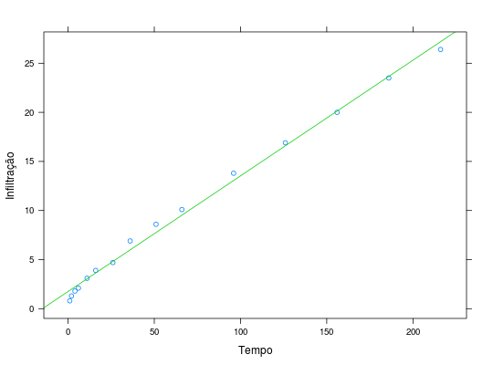
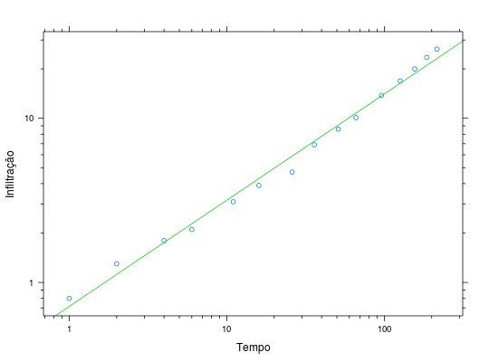

Neste estudo foram medidos os tempos acumulados de irrigação e as correspondentes medidas de infiltração acumulada de água no solo. O objetivo do experimento era estimar as equações de infiltração acumulada em relação ao tempo acumulado e de velocidade de infiltração em relação ao tempo acumulado e à velocidade básica de infiltração. Essas equações são importantes para determinar o tempo de irrigação para atingir uma determinada lâmina de água, pois é anti-econômico irrigar a uma velocidade maior à de infiltração.
Um data.frame de 15 linhas e 2 colunas, em que
tempoinfilDEMÉTRIO; ZOCCHI (2011), Exercício 1.4.2 pág. 16.
data(DemetrioEx1.4.2)#> Warning: data set ‘DemetrioEx1.4.2’ not foundstr(DemetrioEx1.4.2)#> 'data.frame': 15 obs. of 2 variables: #> $ tempo: num 1 2 4 6 11 16 26 36 51 66 ... #> $ infil: num 0.8 1.3 1.8 2.1 3.1 3.9 4.7 6.9 8.6 10.1 ...library(lattice) library(latticeExtra) xyplot(infil ~ tempo, data = DemetrioEx1.4.2, xlab = "Tempo", ylab = "Infiltração", type = c("p", "r"), col.line = 3)xyplot(infil ~ tempo, data = DemetrioEx1.4.2, xlab = "Tempo", ylab = "Infiltração", type = c("p", "r"), col.line = 3, scales = list(y = list(log = 10), x = list(log = 10)), yscale.components = yscale.components.log10ticks, xscale.components = xscale.components.log10ticks)